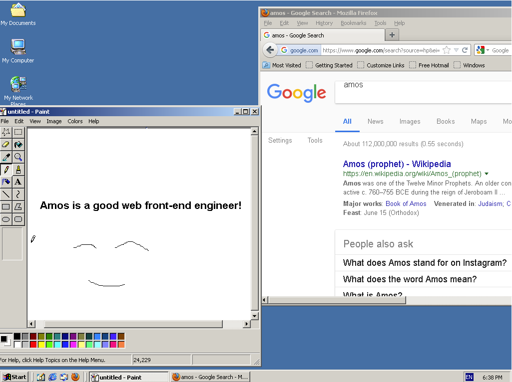
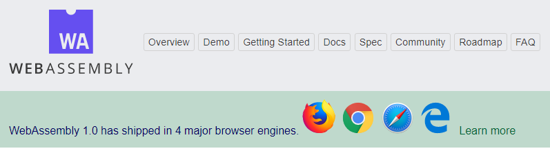
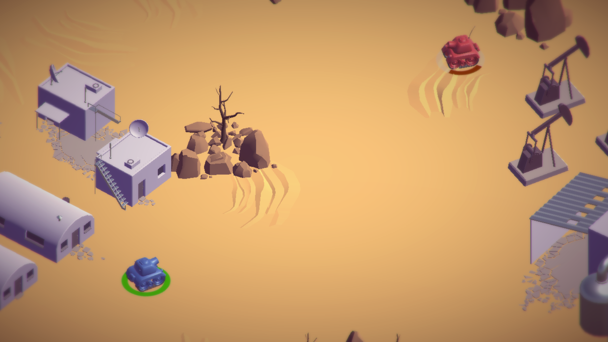

好玩的WebAssembly
前两天在阿里云APP上看到了一则关于网页上运行Windows2000的消息《浏览器中可以运行Window2000，WebAssembly 是 JavaScript 的末日？》。让我着实兴奋了一会，因为浏览器跑普通的桌面程序之前有所耳闻，但直接跑操作系统还是第一次遇到。于是自己亲身体验了一把，除了速度很慢（毕竟是在浏览器里），其他方面还是非常不错的。另外见到了很多年没见的windows2000，其年代感给人的感觉非常独特。究竟是怎样的东西，先点击这里看一下效果：浏览器里运行Windows2000。
强烈建议在配置比较好的电脑上打开，因为没有一颗强大的心脏，跑不起如此大的程序。

（居然可以访问gg）
WebAssembly 是实现这项工程的核心技术。我第一次知道WebAssembly是在几年前学习Erget的时候，那时由于某些原因，对WebAssembly并没有去做进一步的了解。此时其以这种形式展现在眼前，使我觉得很有必要立刻深入地了解一下，因为直觉认为这门技术不仅不会是JavaScript 的末日，将来还会和JavaScript一起大有作为。
什么是WebAssembly
首先，我们有必要了解一下asm.js。2012年，Mozilla 的工程师 Alon Zakai 在研究 LLVM 编译器时突发奇想：许多 3D 游戏都是用 C / C++ 语言写的，如果能将 C / C++ 语言编译成 JavaScript 代码，它们不就能在浏览器里运行了吗？众所周知，JavaScript 的基本语法与 C 语言高度相似。于是，他开始研究怎么才能实现这个目标，为此专门做了一个编译器项目 Emscripten。这个编译器可以将 C / C++ 代码编译成 JS 代码，但不是普通的 JS，而是一种叫做 asm.js 的 JavaScript 变体，性能差不多是原生代码的50%。
之后Google开发了Portable Native Client，也是一种能让浏览器运行C/C++代码的技术。 后来可能是因为彼此之间有共同的更高追求，Google, Microsoft, Mozilla, Apple等几家大公司一起合作开发了一个面向Web的通用二进制和文本格式的项目，那就是WebAssembly。asm.js 与 WebAssembly 功能基本一致，就是转出来的代码不一样：asm.js 是文本，WebAssembly 是二进制字节码，因此运行速度更快、体积更小。从长远来看，WebAssembly 的前景更光明。
WebAssembly官网的定义：
WebAssembly (abbreviated Wasm) is a binary instruction format for a stack-based virtual machine. Wasm is designed as a portable target for compilation of high-level languages like C/C++/Rust, enabling deployment on the web for client and server applications.
WebAssembly(缩写 Wasm)是基于堆栈虚拟机的二进制指令格式。Wasm为了一个可移植的目标而设计的，可用于编译C/C+/RUST等高级语言，使客户端和服务器应用程序能够在Web上部署。
在导航条下方醒目的展示着“WebAssembly 1.0 has shipped in 4 major browser engines. ”。表明WebAssembly对现代浏览器支持非常友好。

大多数程序员会选择使用C语言来编写WebAssembly模块，并将其编译成.wasm文件。这些.wasm文件并不能直接被浏览器识别，所以它们需要一种称为JavaScript胶接代码（glue code，用于连接相互不兼容的软件组件）的东西来加载。具体的开发操作，在此不做展开细述。有兴趣的人可以在网上查阅到详细的资料。

WebAssembly结合日渐成熟的WebGL技术，使得大型的游戏等应用迁移到浏览器将逐渐成为可能。WebAssembly官网上给了一个基于unity游戏引擎的小例子Unity WebGL Player-Tanks!，大家可以玩一玩。

简单介绍到此，希望你能有所收获。
本文参考资料